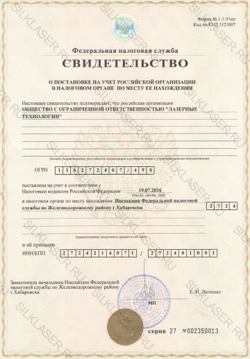

Реквизиты
-
ООО "Лазерные Технологии"
Юридический адрес: г. Хабаровск, ул. Карла Маркса, д. 91, пом. 4
Фактический адрес: г. Хабаровск, Амурский бульвар, д. 3
ОГРН 1162724073490
ИНН/КПП 2724214071/272401001
-
Филиал 2754 ВТБ 24 (ПАО), г. Хабаровск
Адрес (банка): г. Хабаровск, ул. Муравьева-Амурского, 18
БИК 040813827
Корр. счет 30101810300000000827
Расч. счет 40702810317560004539
Лицензия


Учредительные документы
- 
-

Контролирующие органы
-
Отдел Защиты Прав Потребителей.
Адрес: г. Хабаровск, ул. Фрунзе, д.50.
Телефон: 30-03-27
-
Управление Федеральной службы по надзору в сфере защиты прав потребителей и благополучия человека по Хабаровскому краю.
Адрес: г. Хабаровск, ул. Карла Маркса, д.109Б.
Телефон: 27-47-44
-
Министерство Здравоохранения Хабаровского края.
Адрес: г. Хабаровск, ул. Муравьева-Амурского, д.32.
Телефон: 40-23-22
-
Территориальный орган Росздравнадзора по Хабаровскому краю.
Адрес: г. Хабаровск, ул. Петра Комарова, д.6, офис 104.
Телефон: 75-22-30
Специалисты
Аленичева Юлия Валерьевна - Врач-косметолог
Образование
Диплом о высшем медицинском образовании по специальности Педиатрия (КА №25344, выдан 17.06.2011 ГОУ ВПО ДВГМУ Минздравсоцразвития РФ).
Удостоверение о подготовке в интернатуре по специальности Дерматовенерология (КА №25344, выдан 31.08.2012 ГБОУ ВПО ДВГМУ Минздравсоцразвития России).
Сертификат по специальности Дерматовенерология (А №4273326, выдан 31.08.2012 ГБОУ ВПО ДВГМУ Минздравсоцразвития России).
Сертификат по специальности Косметология (0727180510337, выдан 24.12.2016 КГБОУ ДПО ИПКСЗ Минздравоохранения Хабаровского края).
Диплом о профессиональной переподготовке по специальности Косметология (180000118034, выдан 24.12.2016 КГБОУ ДПО ИПКСЗ Минздравоохранения Хабаровского края).
Демидова Оксана Анатольевна - Медицинская сестра по косметологии
Образование
Диплом о средне-специальном образовании по специальности Лечебное дело (УТ №409083, выдан 27.02.1998 Медицинским Училищем г. Николаевск-на-Амуре).
Сертификат по Сестринскому делу в косметологии (0827240744135, выдан 29.10.2016 КГБ ПОУ Хабаровский государственный медицинский колледж).
Режим работы Лазерной клиники Silk: Ежедневно 9:00 - 20:00.
Режим работы медицинских работников: Специалисты осуществляют приём по предварительной записи по телефону 944-150 или через онлайн-запись.
Подробная информация об осуществляемых платных медицинских услугах с указанием цен:
Порядок, форма и условия предоставления платных медицинских услуг в Лазерной клинике Silk
Условия предоставления платных медицинских услуг
Платные медицинские услуги предоставляются в соответствии с перечнем услуг, указанным в лицензии на осуществление медицинской деятельности.
Основанием для предоставления платных медицинских услуг является добровольное волеизъявление потребителя и согласие приобрести медицинскую услугу на платной основе счет личных средств граждан, средств юридических лиц и иных средств, оформленное в виде договора.
При этом до сведения потребителя должна быть доведена в доступной форме необходимая информация о возможности получения данных видов медицинских услуг бесплатно в рамках Программы ОМС.
При оказании платных медицинских услуг должна быть опубликована информация в общедоступных местах (на информационном стенде, сайте и т.п.):
- наименование и адрес места нахождения Исполнителя; - лицензия на осуществление медицинской деятельности;
- перечень платных медицинских услуг с указанием цен в рублях, - сведения об условиях, порядке, форме предоставления медицинских услуг и порядке их оплаты;
- сведения о медицинских работниках, участвующих в предоставлении платных медицинских услуг, об уровне их профессионального образования и квалификации;
- режиме работы медицинских работников, участвующих в предоставлении платных медицинских услуг;
- адреса и телефоны контролирующих органов;
- порядок оказания платных услуг.
Лазерная клиника обязана обеспечить соответствие предоставляемых платных медицинских услуг требованиям и стандартам.
Платные медицинские услуги оказываются на основе договоров, регламентирующих условия и сроки их предоставления, порядок расчетов, права, обязанности и ответственности сторон. Договор заключается потребителем, заказчиком и исполнителем в письменной форме, составляется в 3 экземплярах, один из которых находится у исполнителя, второй - у заказчика, третий - у потребителя. В случае если договор заключается потребителем и исполнителем, он составляется в 2 экземплярах (один экземпляр договора выдается потребителю, второй экземпляр договора на предоставление платных медицинских услуг хранится в учреждении).
До заключения договора исполнитель уведомляет потребителя о том, что несоблюдение рекомендаций медицинских работников при предоставлении платных медицинских услуг, в том числе назначенного режима лечения, могут снизить качество предоставляемой платной медицинской услуги, повлечь за собой невозможность ее завершения в срок или отрицательно сказаться на состоянии здоровья потребителя;
случае, если при предоставлении платных медицинских услуг потребуется предоставление дополнительных медицинских услуг по экстренным показаниям для устранения угрозы жизни потребителя при внезапных острых заболеваниях, состояниях, обострении хронических заболеваний, такие медицинские услуги оказываются без взимания платы в соответствии с Федеральным законом «Об основах охраны здоровья граждан в РФ».
Порядок предоставления платных медицинских услуг
Исполнитель предоставляет платные медицинские услуги, качество которых должно соответствовать условиям договора, а при отсутствии в договоре условий об их качестве – требованиям, предъявляемым к услугам соответствующего вида.
Платные медицинские услуги предоставляются при наличии информированного добровольного согласия потребителя (законного представителя потребителя), данного в порядке, установленном законодательством РФ об охране здоровья граждан.
Исполнитель предоставляет потребителю по его требованию:
- информацию о состоянии его здоровья, включая сведения о результатах обследования, диагнозе, методах лечения, связанном с ними риске, возможных вариантах и последствиях медицинского вмешательства, ожидаемых результатах лечения;
- информацию об используемых при предоставлении платных медицинских услуг лекарственных препаратах и медицинских изделиях, показаниях (противопоказаниях) к применению.
- справку установленной формы для предъявления в налоговые органы РФ об оплате услуг в соответствии с перечнем медицинских услуг (лекарственных средств), суммы оплаты которых за счет собственных средств налогоплательщика учитываются при определении суммы социального налогового вычета.
Исполнитель обязан при оказании платных медицинских услуг соблюдать установленные законодательством РФ требования к оформлению и ведению медицинской документации и учетных и отчетных статистических форм, порядку и срокам их представления.
Форма предоставления платных медицинских услуг
Платные медицинские услуги предоставляются на возмездной основе за счет личных средств граждан, средств юридических лиц и иных средств на основании договоров.
Порядок оплаты медицинских услуг
Потребитель обязан оплатить предоставленную исполнителем медицинскую услугу в сроки и в порядке, которые определены договором.
Потребителю в соответствии с законодательством Российской Федерации выдается документ, подтверждающий произведенную оплату предоставленных медицинских услуг (контрольно-кассовый чек, квитанция или иной бланк строгой отчетности). Расчеты осуществляются путем наличных и безналичных платежей.
Режим работы при оказании платных услуг
Медицинские услуги на платной основе предоставляются в установленный график работы, при этом не снижаются доступность и качество медицинской помощи, оказываемой в рамках Территориальной программы государственных гарантий бесплатного оказания гражданам медицинской помощи.
Возврат денежных средств за неоказанные медицинские услуги
Возврат осуществляется безналичным способом оплаты. Потребителю необходимо обратиться в Лазерную клинику Silk после 13.00. Иметь при себе: паспорт, договор, контрольно-кассовый чек или платежное поручение из банка, заявление в свободной форме
Правила предоставления медицинскими организациями платных медицинских услуг (утв. постановлением Правительства РФ от 4 октября 2012, 1006)
I. Общие положения
-
Настоящие Правила определяют порядок и условия предоставления медицинскими организациями гражданам платных медицинских услуг.
-
Для целей настоящих Правил используются следующие основные понятия:
- “платные медицинские услуги” - медицинские услуги, предоставляемые на возмездной основе за счет личных средств граждан, средств юридических лиц и иных средств на основании договоров, в том числе договоров добровольного медицинского страхования (далее - договор);
- “потребитель” - физическое лицо, имеющее намерение получить либо получающее платные медицинские услуги лично в соответствии с договором. Потребитель, получающий платные медицинские услуги, является пациентом, на которого распространяется действие Федерального закона “Об основах охраны здоровья граждан в Российской Федерации”;
- “заказчик” - физическое (юридическое) лицо, имеющее намерение заказать (приобрести) либо заказывающее (приобретающее) платные медицинские услуги в соответствии с договором в пользу потребителя;
- “исполнитель” - медицинская организация, предоставляющая платные медицинские услуги потребителям.
Понятие “медицинская организация” употребляется в настоящих Правилах в значении, определенном в Федеральном законе “Об основах охраны здоровья граждан в Российской Федерации”.
-
Платные медицинские услуги предоставляются медицинскими организациями на основании перечня работ (услуг), составляющих медицинскую деятельность и указанных в лицензии на осуществление медицинской деятельности, выданной в установленном порядке.
-
Требования к платным медицинским услугам, в том числе к их объему и срокам оказания, определяются по соглашению сторон договора, если федеральными законами, иными нормативными правовыми актами Российской Федерации не предусмотрены другие требования.
-
Настоящие Правила в наглядной и доступной форме доводятся исполнителем до сведения потребителя (заказчика).
II. Условия предоставления платных медицинских услуг
-
При заключении договора потребителю (заказчику) предоставляется в доступной форме информация о возможности получения соответствующих видов и объемов медицинской помощи без взимания платы в рамках программы государственных гарантий бесплатного оказания гражданам медицинской помощи и территориальной программы государственных гарантий бесплатного оказания гражданам медицинской помощи (далее - соответственно программа, территориальная программа).
-
Отказ потребителя от заключения договора не может быть причиной уменьшения видов и объемов медицинской помощи, предоставляемых такому потребителю без взимания платы в рамках программы и территориальной программы.
Медицинские организации, участвующие в реализации программы и территориальной программы, имеют право предоставлять платные медицинские услуги:а) на иных условиях, чем предусмотрено программой, территориальными программами и (или) целевыми программами, по желанию потребителя (заказчика), включая в том числе:
- установление индивидуального поста медицинского наблюдения при лечении в условиях стационара;
- применение лекарственных препаратов, не входящих в перечень жизненно необходимых и важнейших лекарственных препаратов, если их назначение и применение не обусловлено жизненными показаниями или заменой из-за индивидуальной непереносимости лекарственных препаратов, входящих в указанный перечень, а также применение медицинских изделий, лечебного питания, в том числе специализированных продуктов лечебного питания, не предусмотренных стандартами медицинской помощи;
б) при предоставлении медицинских услуг анонимно, за исключением случаев, предусмотренных законодательством Российской Федерации;
в) гражданам иностранных государств, лицам без гражданства, за исключением лиц, застрахованных по обязательному медицинскому страхованию, и гражданам Российской Федерации, не проживающим постоянно на ее территории и не являющимся застрахованными по обязательному медицинскому страхованию, если иное не предусмотрено международными договорами Российской Федерации;
г) при самостоятельном обращении за получением медицинских услуг, за исключением случаев и порядка, предусмотренных статьей 21 Федерального закона "Об основах охраны здоровья граждан в Российской Федерации", и случаев оказания скорой, в том числе скорой специализированной, медицинской помощи и медицинской помощи, оказываемой в неотложной или экстренной форме.
-
Порядок определения цен (тарифов) на медицинские услуги, предоставляемые медицинскими организациями, являющимися бюджетными и казенными государственными (муниципальными) учреждениями, устанавливается органами, осуществляющими функции и полномочия учредителей.
Медицинские организации иных организационно-правовых форм определяют цены (тарифы) на предоставляемые платные медицинские услуги самостоятельно.
-
При предоставлении платных медицинских услуг должны соблюдаться порядки оказания медицинской помощи, утвержденные Министерством здравоохранения Российской Федерации.
-
Платные медицинские услуги могут предоставляться в полном объеме стандарта медицинской помощи, утвержденного Министерством здравоохранения Российской Федерации, либо по просьбе потребителя в виде осуществления отдельных консультаций или медицинских вмешательств, в том числе в объеме, превышающем объем выполняемого стандарта медицинской помощи.
III. Информация об исполнителе и предоставляемых им медицинских услугах
-
Исполнитель обязан предоставить посредством размещения на сайте медицинской организации в информационно-телекоммуникационной сети "Интернет", а также на информационных стендах (стойках) медицинской организации информацию, содержащую следующие сведения:
а) для юридического лица - наименование и фирменное наименование (если имеется);
для индивидуального предпринимателя - фамилия, имя и отчество (если имеется);
б) адрес места нахождения юридического лица, данные документа, подтверждающего факт внесения сведений о юридическом лице в Единый государственный реестр юридических лиц, с указанием органа, осуществившего государственную регистрацию;
адрес места жительства и адрес места осуществления медицинской деятельности индивидуального предпринимателя, данные документа, подтверждающего факт внесения сведений об индивидуальном предпринимателе в Единый государственный реестр индивидуальных предпринимателей, с указанием органа, осуществившего государственную регистрацию;в) сведения о лицензии на осуществление медицинской деятельности (номер и дата регистрации, перечень работ (услуг), составляющих медицинскую деятельность медицинской организации в соответствии с лицензией, наименование, адрес места нахождения и телефон выдавшего ее лицензирующего органа);
г) перечень платных медицинских услуг с указанием цен в рублях, сведения об условиях, порядке, форме предоставления медицинских услуг и порядке их оплаты;
д) порядок и условия предоставления медицинской помощи в соответствии с программой и территориальной программой;
е) сведения о медицинских работниках, участвующих в предоставлении платных медицинских услуг, об уровне их профессионального бразования и квалификации;
ж) режим работы медицинской организации, график работы медицинских работников, участвующих в предоставлении платных медицинских услуг;
з) адреса и телефоны органа исполнительной власти субъекта Российской Федерации в сфере охраны здоровья граждан, территориального органа Федеральной службы по надзору в сфере здравоохранения и территориального органа Федеральной службы по надзору в сфере защиты прав потребителей и благополучия человека.
-
Информация, размещенная на информационных стендах (стойках), должна быть доступна неограниченному кругу лиц в течение всего рабочего времени медицинской организации, предоставляющей платные медицинские услуги. Информационные стенды (стойки) располагаются в доступном для посетителей месте и оформляются таким образом, чтобы можно было свободно ознакомиться с размещенной на них информацией.
-
Исполнитель предоставляет для ознакомления по требованию потребителя и (или) заказчика:
а) копию учредительного документа медицинской организации - юридического лица, положение о ее филиале (отделении, другом территориально обособленном структурном подразделении), участвующем в предоставлении платных медицинских услуг, либо копию свидетельства о государственной регистрации физического лица в качестве индивидуального предпринимателя;
б) копию лицензии на осуществление медицинской деятельности с приложением перечня работ (услуг), составляющих медицинскую деятельность медицинской организации в соответствии с лицензией.
-
При заключении договора по требованию потребителя и (или) заказчика им должна предоставляться в доступной форме информация о платных медицинских услугах, содержащая следующие сведения:
а) порядки оказания медицинской помощи и стандарты медицинской помощи, применяемые при предоставлении платных медицинских услуг;
б) информация о конкретном медицинском работнике, предоставляющем соответствующую платную медицинскую услугу (его профессиональном образовании и квалификации);
в) информация о методах оказания медицинской помощи, связанных с ними рисках, возможных видах медицинского вмешательства, их последствиях и ожидаемых результатах оказания медицинской помощи;
г) другие сведения, относящиеся к предмету договора.
-
До заключения договора исполнитель в письменной форме уведомляет потребителя (заказчика) о том, что несоблюдение указаний (рекомендаций) исполнителя (медицинского работника, предоставляющего платную медицинскую услугу), в том числе назначенного режима лечения, могут снизить качество предоставляемой платной медицинской услуги, повлечь за собой невозможность ее завершения в срок или отрицательно сказаться на состоянии здоровья потребителя.
IV. Порядок заключения договора и оплаты медицинских услуг
-
Договор заключается потребителем (заказчиком) и исполнителем в письменной форме.
-
Договор должен содержать:
а) сведения об исполнителе:
- наименование и фирменное наименование (если имеется) медицинской организации - юридического лица, адрес места нахождения, данные документа, подтверждающего факт внесения сведений о юридическом лице в Единый государственный реестр юридических лиц, с указанием органа, осуществившего государственную регистрацию;
- фамилия, имя и отчество (если имеется) индивидуального предпринимателя, адрес места жительства и адрес места осуществления медицинской деятельности, данные документа, подтверждающего факт внесения сведений об индивидуальном предпринимателе в Единый государственный реестр индивидуальных предпринимателей, с указанием органа, осуществившего государственную регистрацию;
номер лицензии на осуществление медицинской деятельности, дата ее регистрации с указанием перечня работ (услуг), составляющих - медицинскую деятельность медицинской организации в соответствии с лицензией, наименование, адрес места нахождения и телефон выдавшего ее лицензирующего органа;
б) фамилию, имя и отчество (если имеется), адрес места жительства и телефон потребителя (законного представителя потребителя);
- фамилию, имя и отчество (если имеется), адрес места жительства и телефон заказчика - физического лица;
- наименование и адрес места нахождения заказчика - юридического лица;
в) перечень платных медицинских услуг, предоставляемых в соответствии с договором;
г) стоимость платных медицинских услуг, сроки и порядок их оплаты;
д) условия и сроки предоставления платных медицинских услуг;
е) должность, фамилию, имя, отчество (если имеется) лица, заключающего договор от имени исполнителя, и его подпись, фамилию, имя, отчество (если имеется) потребителя (заказчика) и его подпись. В случае если заказчик является юридическим лицом, указывается должность лица, заключающего договор от имени заказчика;
ж) ответственность сторон за невыполнение условий договора;
з) порядок изменения и расторжения договора;
и) иные условия, определяемые по соглашению сторон.
-
Договор составляется в 3 экземплярах, один из которых находится у исполнителя, второй - у заказчика, третий - у потребителя.
В случае если договор заключается потребителем и исполнителем, он составляется в 2 экземплярах. -
На предоставление платных медицинских услуг может быть составлена смета. Ее составление по требованию потребителя (заказчика) или исполнителя является обязательным, при этом она является неотъемлемой частью договора.
В случае если при предоставлении платных медицинских услуг требуется предоставление на возмездной основе дополнительных медицинских услуг, не предусмотренных договором, исполнитель обязан предупредить об этом потребителя (заказчика).
-
Без согласия потребителя (заказчика) исполнитель не вправе предоставлять дополнительные медицинские услуги на возмездной основе.
-
В случае если при предоставлении платных медицинских услуг потребуется предоставление дополнительных медицинских услуг по экстренным показаниям для устранения угрозы жизни потребителя при внезапных острых заболеваниях, состояниях, обострениях хронических заболеваний, такие медицинские услуги оказываются без взимания платы в соответствии с Федеральным законом "Об основах охраны здоровья граждан в Российской Федерации".
-
В случае отказа потребителя после заключения договора от получения медицинских услуг договор расторгается. Исполнитель информирует потребителя (заказчика) о расторжении договора по инициативе потребителя, при этом потребитель (заказчик) оплачивает исполнителю фактически понесенные исполнителем расходы, связанные с исполнением обязательств по договору.
-
Потребитель (заказчик) обязан оплатить предоставленную исполнителем медицинскую услугу в сроки и в порядке, которые определены договором.
-
Потребителю (заказчику) в соответствии с законодательством Российской Федерации выдается документ, подтверждающий произведенную оплату предоставленных медицинских услуг (контрольно-кассовый чек, квитанция или иной бланк строгой отчетности (документ установленного образца)).
-
Исполнителем после исполнения договора выдаются потребителю (законному представителю потребителя) медицинские документы (копии медицинских документов, выписки из медицинских документов), отражающие состояние его здоровья после получения платных медицинских услуг.
-
Заключение договора добровольного медицинского страхования и оплата медицинских услуг, предоставляемых в соответствии с указанным договором, осуществляются в соответствии с Гражданским кодексом Российской Федерации и Законом Российской Федерации "Об организации страхового дела в Российской Федерации".
V. Порядок предоставления платных медицинских услуг
-
Исполнитель предоставляет платные медицинские услуги, качество которых должно соответствовать условиям договора, а при отсутствии в договоре условий об их качестве - требованиям, предъявляемым к услугам соответствующего вида.
В случае если федеральным законом, иными нормативными правовыми актами Российской Федерации предусмотрены обязательные требования к качеству медицинских услуг, качество предоставляемых платных медицинских услуг должно соответствовать этим требованиям.
-
Платные медицинские услуги предоставляются при наличии информированного добровольного согласия потребителя (законного представителя потребителя), данного в порядке, установленном законодательством Российской Федерации об охране здоровья граждан.
-
Исполнитель предоставляет потребителю (законному представителю потребителя) по его требованию и в доступной для него форме информацию:
- о состоянии его здоровья, включая сведения о результатах обследования, диагнозе, методах лечения, связанном с ними риске, возможных вариантах и последствиях медицинского вмешательства, ожидаемых результатах лечения;
- об используемых при предоставлении платных медицинских услуг лекарственных препаратах и медицинских изделиях, в том числе о сроках их годности (гарантийных сроках), показаниях (противопоказаниях) к применению.
-
Исполнитель обязан при оказании платных медицинских услуг соблюдать установленные законодательством Российской Федерации требования к оформлению и ведению медицинской документации и учетных и отчетных статистических форм, порядку и срокам их представления.
VI. Ответственность исполнителя и контроль за предоставлением платных медицинских услуг
-
За неисполнение либо ненадлежащее исполнение обязательств по договору исполнитель несет ответственность, предусмотренную законодательством Российской Федерации.
-
Вред, причиненный жизни или здоровью пациента в результате предоставления некачественной платной медицинской услуги, подлежит возмещению исполнителем в соответствии с законодательством Российской Федерации.
-
Контроль за соблюдением настоящих Правил осуществляет Федеральная служба по надзору в сфере защиты прав потребителей и благополучия человека в рамках установленных полномочий.